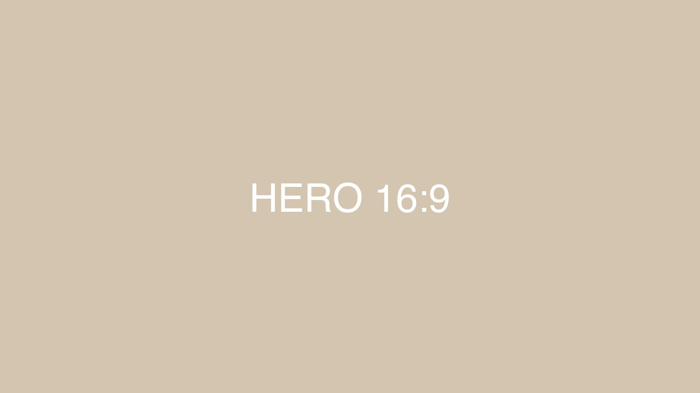
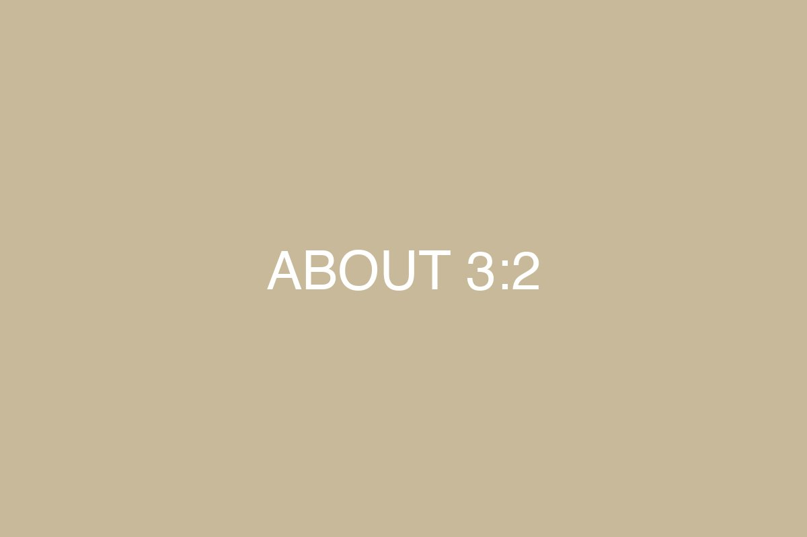
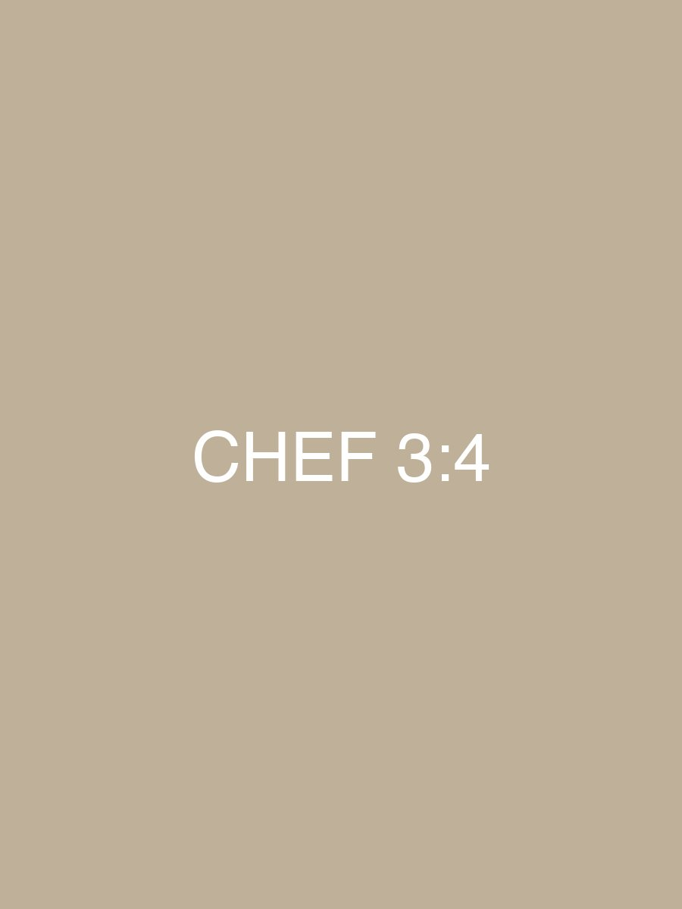

Massa fresca com frutos do mar
R$ 68Massa artesanal preparada diariamente com frutos do mar frescos e molho especial da casa.
Cozinha italiana clássica e artesanal desde 1999.
Massa fresca artesanal


Inaugurado em 1999, o Barolo sempre apostou no melhor de duas mesas, servindo uma combinação entre a cozinha italiana clássica e a culinária própria que floresceu aqui no Brasil com os imigrantes italianos. Prezamos pela qualidade de nossos ingredientes e acreditamos na importância da confecção artesanal e diária das massas que servimos, acompanhadas de carnes vermelhas, frutos do mar e peixes, além dos molhos especiais criados pelos nossos chefs.



Somos considerados um dos mais requintados restaurantes italianos do Brasil. Possuímos certificado de excelência da Tripadvisor e inúmeros prêmios que ressaltam a qualidade de ponta que procuramos proporcionar todos os dias e em cada prato aos nossos clientes.